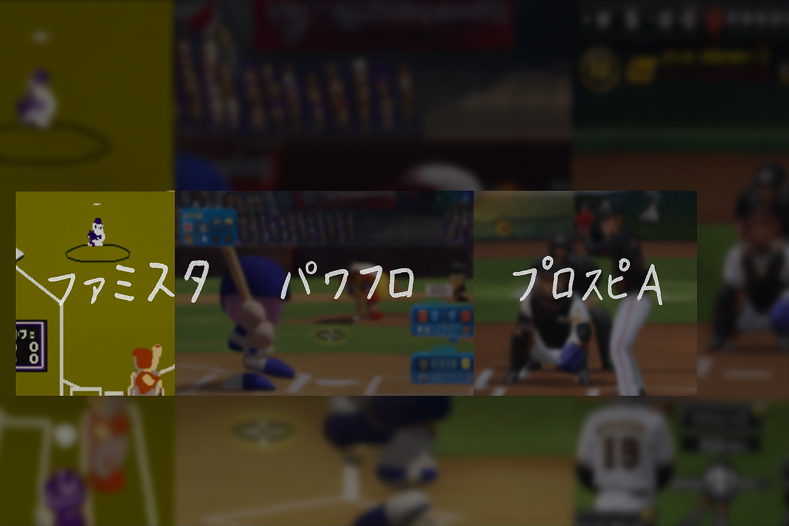

第0回｜体と思考の準備
分離（セグメント）という概念の理解

ファミスタ → パワプロ → プロスピA
野球の動作を理解するうえで最初に必要なのは「分離」という発想だ。
体は一枚岩ではなく、いくつものパーツが時間差で連動している。
これをセグメント機能と呼ぶ。
セグメントが乏しい体は、ファミスタのキャラのように一枚絵で動く。
腰を切るも腕を振るも、全部が同時に動き出すため再現性がない。
セグメントが育ってくると、パワプロのように
「骨盤が先に」「胸郭があとから」という時間差が出る。
それが動作の“つながり”の始まりだ。
そしてセグメントが階層的に連動しはじめると、パワスピのような
流体的モーションになる。
それが回旋（内部のねじれ）が波となり、回転（外の動き）になる瞬間だ。
外から見えるのは「回転」。
中で感じているのは「回旋」。
この両者の関係を理解することが、体を整え、思考を整える最初の一歩になる。
▶ セグメント進化のイメージ

―― ファミスタからパワスピへ。
君の身体もアップデートできる。
セグメントとは何か？
セグメントとは「分離して動ける関節単位」のこと。
胸郭・肩甲帯・骨盤・股関節・下腿……。
これらが互いに独立しながらも連携して波を作る。
この“波”が強ければ強いほど、身体は少ない力で大きな出力を生む。
筋力ではなく、構造の整合で動きを作るということだ。